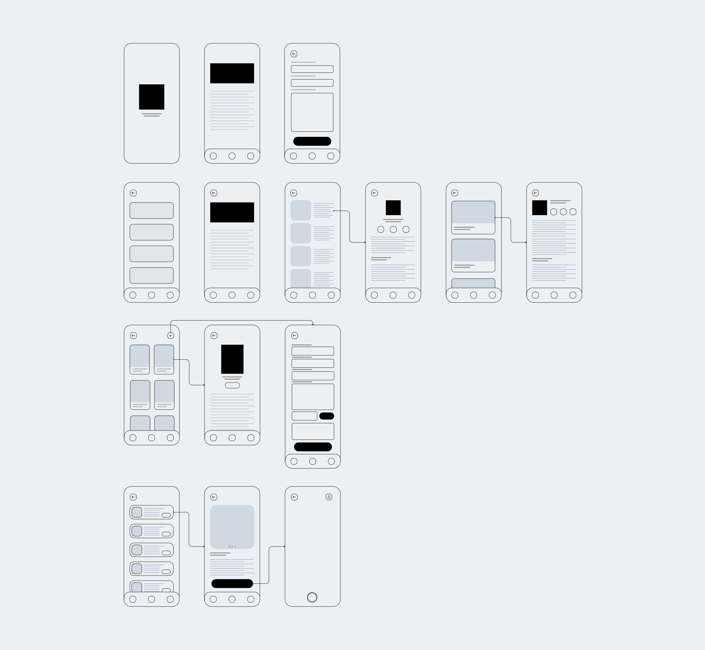
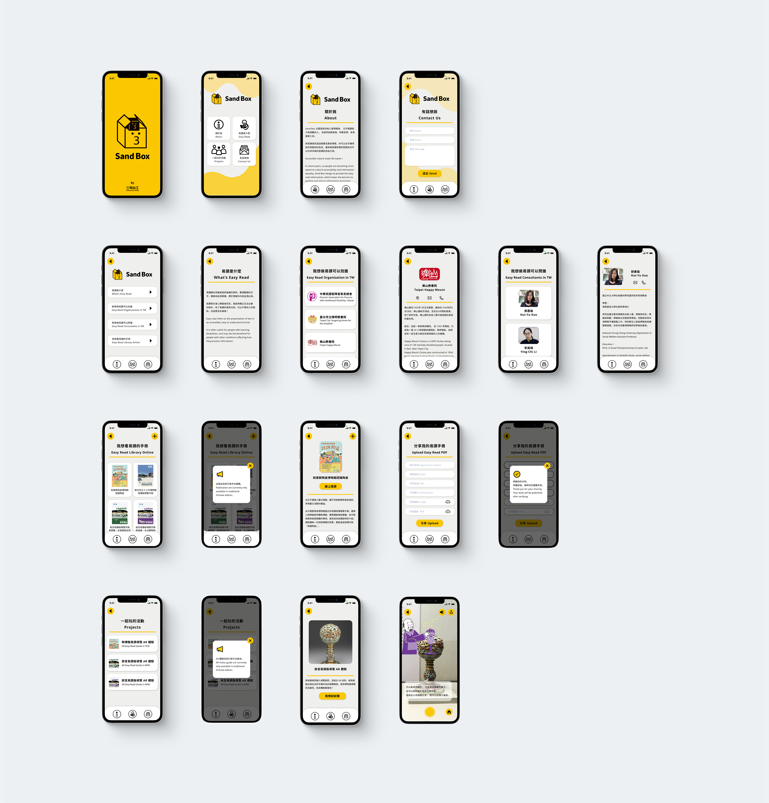

UI/UX Design | User Flow | Wireframing | Mockups
In recent years, as people are becoming more aware to cultural accessibility and information equality, We have collaborated with different organizations to design accessible guidebooks, which lower the barriers to reading and reduce imbalanced judgments due to information disparities.
We plan tp develop digital contents and further incorporates the concepts of legible information to make people’s life easier. As the result, Sand Box is coming.
Sand Box integrated the easy read information into AR and voice guide; furthermore, it provided the related information of easy read, aiming to realize the sharing platform of easy read information resource.
The goverment advocate accessibility and information equality to ensure everyone's rights of participating in society and culture. However, most of people don't receive the related information. It's hard to find all the resouces as well.
Easy to read aim to make the presentation of text in an accessible and easy to understand format, and often useful for people with learning disabilities, intellectual disabilities, and may also be beneficial for people with other conditions. We design an app for integrating all the resources of easy to read that allows everyone to obtain and share them.
I conducted interviews and created empathy maps to understand the users I’m designing for and their needs. A primary user group identified through research were disabilities organizations and families of people with disabilities.
1. Create their own easy read content Users want to create easy read content, but they don't know how to start it.
2. Can’t find easy read publications Users want a platform that collect all the easy read publication.
To better understand how we would construct the core experience for Sand Box, we designed a user flow. This helped us focus more on the experience and needs of the user and less so on the details that we would solidify later on.
We tried to sketch wireframes and think through the preliminary flow, we reviewed what was nessecary, unessecary , and what areas needed improvement.
We iterated on the rough wireframes and brought it to our collaborative organization to collect feedback. Finally, we optimized the features and create more intuitive flows.
Most people know social engagement is helpful to the society but are reluctant to take the first step. To change this, we started from the perspective of design with friendly and legible words instead of complicated concepts; and more than often, they would be able to awaken people’s perception in experiential processes.
Although in the development of Sand Box wasn't completed yet, we already received many positive feedbacks for the prototype.
1. The Contrast Ratio of all screen reach the AAA level.
2. Used icons to help make navigation easier.
3. I used headings with different sized text for clear visual hierarchy.
The core concept of Sand Box is ensuring everyone’s rights of participating in society and culture.
Try to simplify abstract or complicated contents into easily digestible information is a chanlenge, but It's worth to doing.
1. Conduct another round of usability studies to validate whether the pain points users experienced have been effectively addressed.
2. Conduct more user research to determine any new areas of need, such as integrating much informtion about accessibility.